Wazuh XDR Enterprise Security Monitoring
Overview
Wazuh is an open-source security platform that provides endpoint detection, log analysis, file integrity monitoring, vulnerability detection, security configuration assessment, compliance monitoring, and incident response capabilities.
Within the MaryShield Cyber Lab, Wazuh provides centralized security visibility for Windows Server 2022, Windows 11, and Ubuntu systems. Wazuh agents collect endpoint telemetry and forward security events to the Wazuh Manager for analysis, alert generation, and dashboard visualization.
This project demonstrates the deployment and administration of the Wazuh Manager, Indexer, Dashboard, API, and endpoint agents. It also documents integration with Splunk Enterprise and Security Onion to provide layered endpoint and network monitoring.
Project Objectives
- Deploy the Wazuh Manager, Indexer, and Dashboard.
- Install Wazuh agents on Windows Server 2022 and Windows 11.
- Monitor the Ubuntu server as the local Wazuh system.
- Collect Windows Security Events and endpoint telemetry.
- Implement File Integrity Monitoring.
- Perform vulnerability detection.
- Run Security Configuration Assessments.
- Map alerts to MITRE ATT&CK techniques.
- Investigate security events using the Wazuh Dashboard.
- Document Active Response capabilities.
- Correlate Wazuh events with Splunk Enterprise.
- Correlate endpoint activity with Security Onion network telemetry.
Enterprise Architecture
The Wazuh architecture uses a centralized manager, indexer, dashboard, and API to receive and analyze endpoint telemetry from systems throughout the MaryShield Cyber Lab.
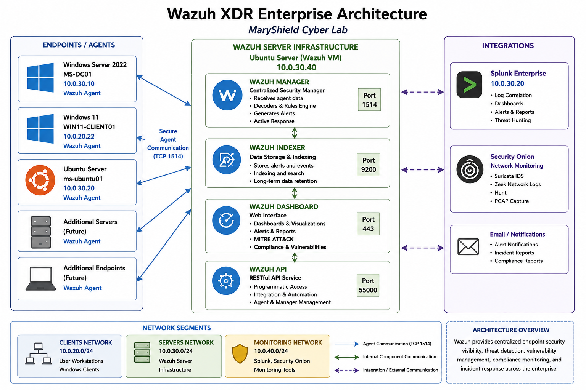
Lab Environment
| Component | Configuration | Purpose |
|---|---|---|
| Ubuntu Server | 10.0.30.20 | Hosts the Wazuh Manager, Indexer, Dashboard, and API. |
| Windows Server 2022 | MS-DC01 / 10.0.30.10 | Domain Controller and monitored Windows server. |
| Windows 11 | WIN11-CLIENT01 / 10.0.10.22 | Domain-joined endpoint monitored by the Wazuh agent. |
| Wazuh Manager | Centralized security manager | Receives events and applies Wazuh rules and decoders. |
| Wazuh Indexer | Security data storage | Indexes and stores alerts and endpoint telemetry. |
| Wazuh Dashboard | Web interface | Provides alerts, reports, MITRE mapping, and investigations. |
| Splunk Enterprise | 10.0.30.20 | Provides centralized SIEM correlation. |
| Security Onion | Network monitoring platform | Provides Suricata, Zeek, Hunt, and PCAP visibility. |
Wazuh Installation
Wazuh was deployed on an Ubuntu Server virtual machine within the Servers network segment. The installation included the Wazuh Manager, Wazuh Indexer, Wazuh Dashboard, and Wazuh API.
Major Installation Tasks
- Prepared the Ubuntu Server virtual machine.
- Configured a static IP address and DNS settings.
- Added the Wazuh software repository.
- Installed the Wazuh Manager.
- Installed and configured the Wazuh Indexer.
- Installed and configured the Wazuh Dashboard.
- Verified Wazuh API connectivity.
- Verified that required services started successfully.
Installation Evidence
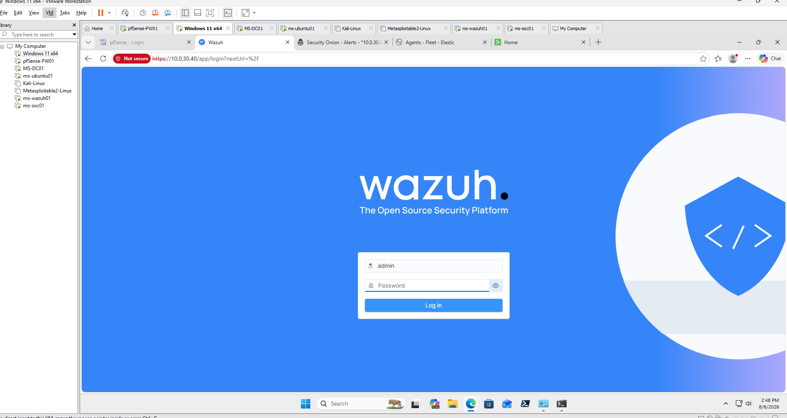
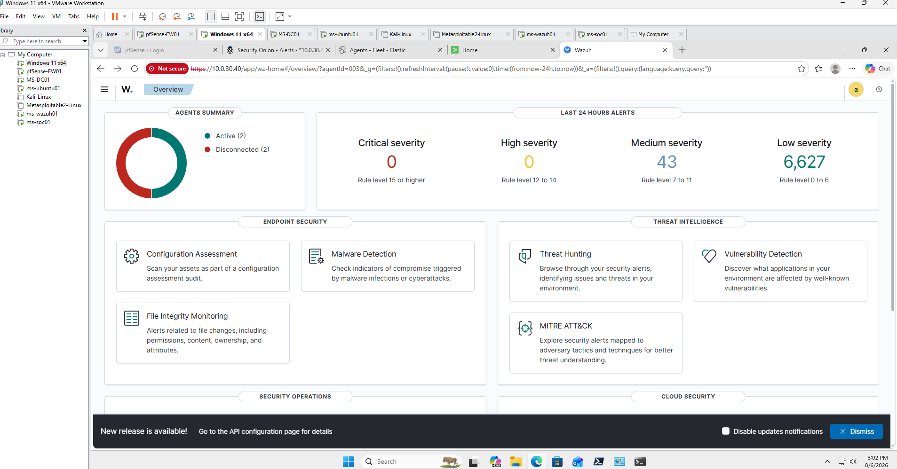
Core Platform Configuration
The Wazuh deployment contains several integrated components that work together to collect, analyze, store, and display enterprise security information.
Wazuh Manager
The Wazuh Manager receives telemetry from enrolled agents, applies decoders and detection rules, generates alerts, and coordinates security monitoring functions.
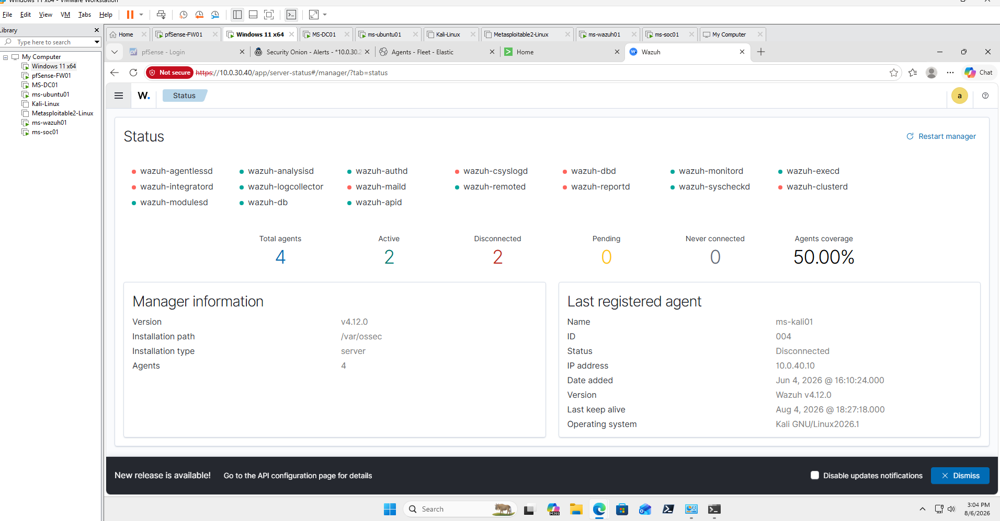
Wazuh Indexer
The Wazuh Indexer stores alerts and security events so they can be searched, visualized, and retained for investigations.
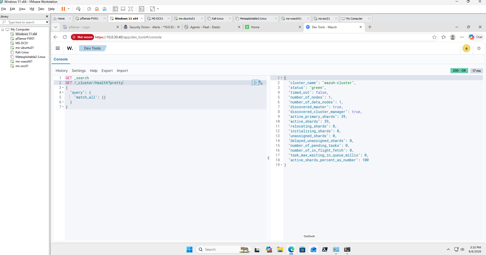
Wazuh API
The Wazuh API provides programmatic access to manager information, agents, rules, alerts, and administrative functions.
- API Port: 55000
- Authentication required
- Supports manager and agent administration
- Provides integration capabilities
Wazuh Agent Deployment
Wazuh agents were installed on enterprise endpoints to collect security events, system information, file changes, configuration data, and endpoint telemetry.
Monitored Agents
| Agent | Operating System | Purpose |
|---|---|---|
| WIN11-CLIENT01 | Windows 11 | Enterprise user workstation monitoring. |
| MS-DC01 | Windows Server 2022 | Domain Controller and Active Directory monitoring. |
| ms-ubuntu01 | Ubuntu Linux | Local Linux and Wazuh server monitoring. |
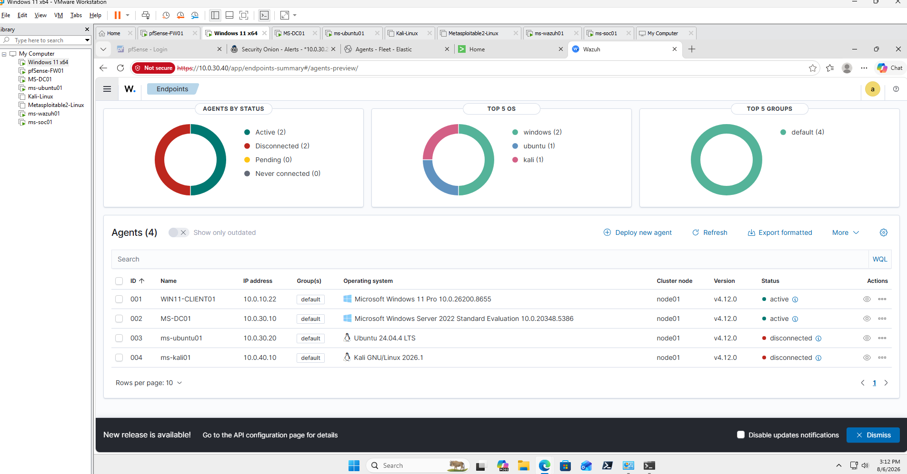
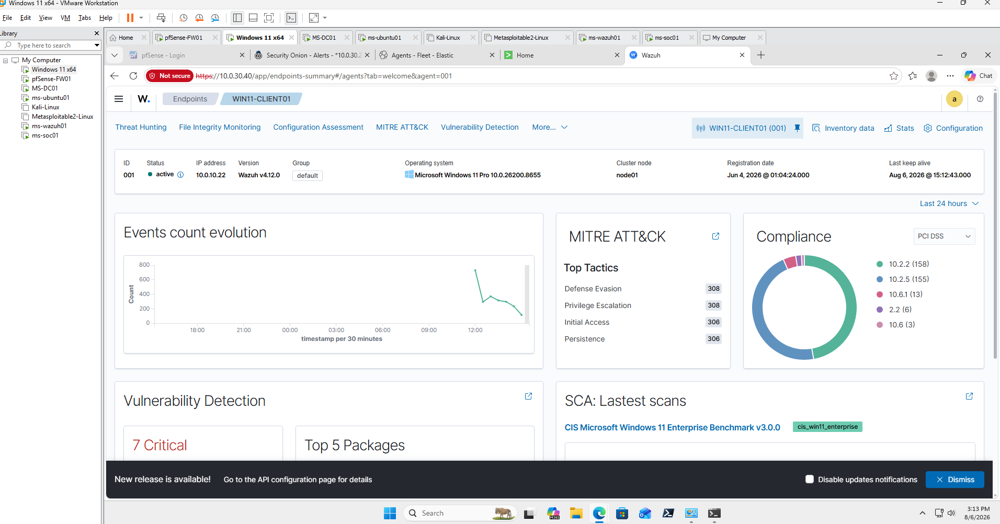
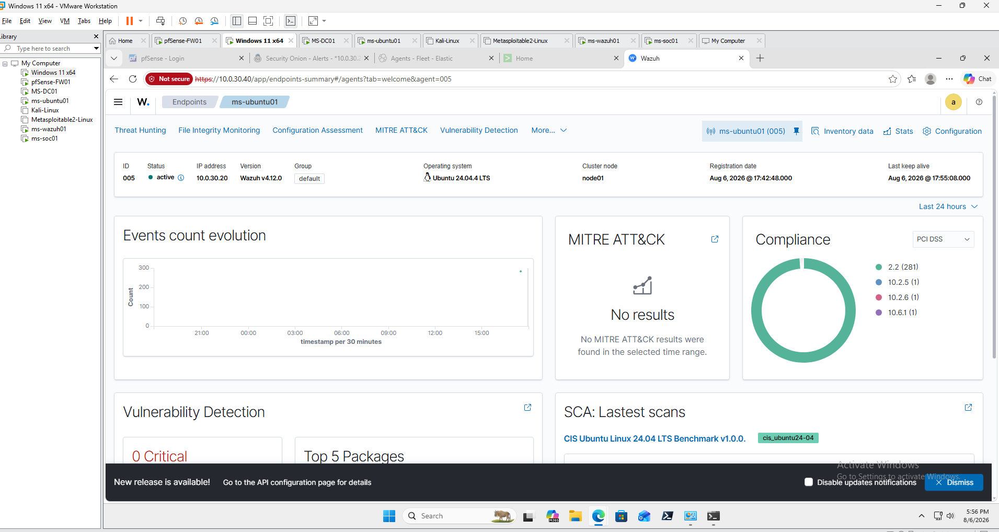
File Integrity Monitoring
Wazuh File Integrity Monitoring tracks changes to selected files and directories. It can identify file creation, modification, deletion, ownership changes, permission changes, and checksum differences.
Monitored Activity
- File creation
- File modification
- File deletion
- Permission changes
- Ownership changes
- Hash and checksum changes
- Windows registry changes
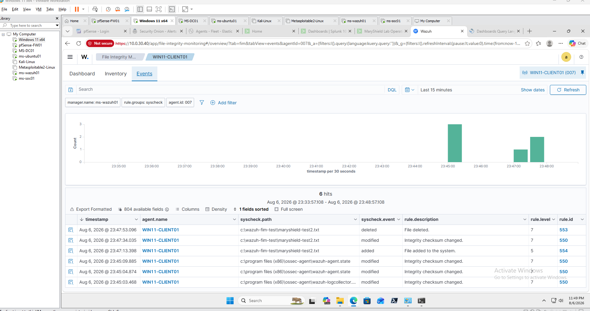
Security Relevance
File Integrity Monitoring helps detect unauthorized configuration changes, malware persistence, web-shell activity, tampering, and modifications to sensitive system files.
Vulnerability Detection
Wazuh analyzes endpoint inventory data and compares installed operating systems and software packages against known vulnerability information.
Vulnerability Information
- CVE identifier
- Severity
- Affected software package
- Installed version
- Recommended remediation
- Endpoint affected
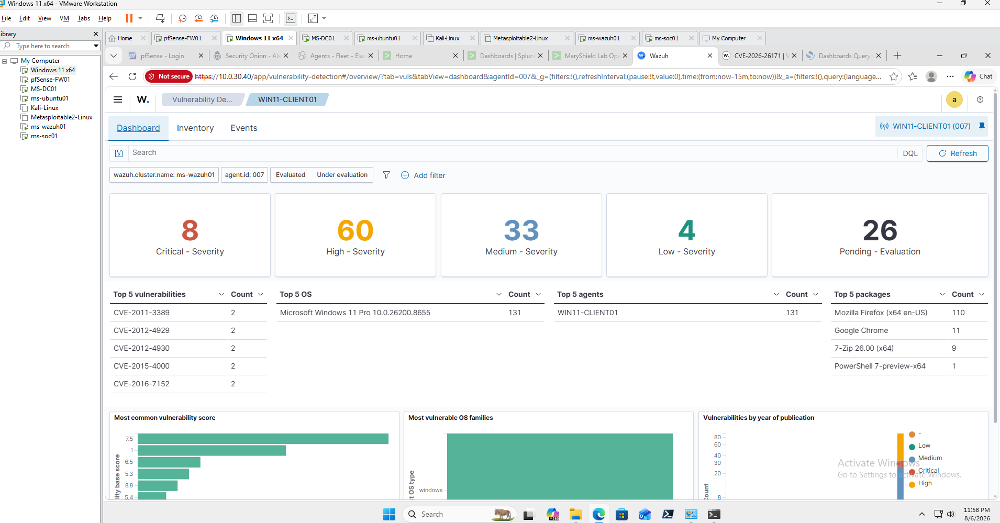
Security Relevance
Continuous vulnerability detection helps prioritize patching and identify systems that may be exposed to known exploits.
Security Configuration Assessment
Wazuh Security Configuration Assessment evaluates monitored systems against security baselines and hardening recommendations.
Assessment Areas
- Password policies
- Account lockout settings
- Windows security configurations
- Linux service configurations
- Audit policy settings
- Firewall configuration
- System permissions
- Security best practices
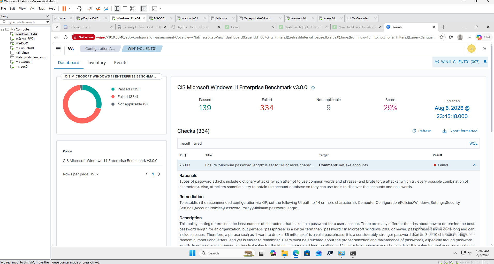
Security Relevance
Security Configuration Assessment helps reduce misconfiguration risk and supports a consistent security baseline across enterprise endpoints.
Active Response
Wazuh Active Response can execute predefined actions when specific security alerts or rule conditions are triggered.
Potential Response Actions
- Block a malicious IP address.
- Disable a compromised account.
- Terminate a suspicious process.
- Execute a custom response script.
- Add a firewall rule.
- Isolate or contain suspicious endpoint activity.
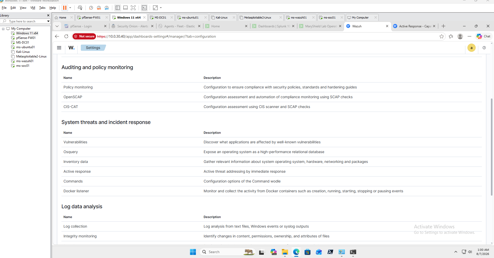
Lab note: Active Response was documented and tested only within the isolated MaryShield Cyber Lab. Automated blocking actions should be carefully tested before deployment in production environments.
MITRE ATT&CK Mapping
Wazuh maps many security alerts to MITRE ATT&CK tactics and techniques, helping analysts understand the behavior and potential objective associated with detected activity.
| Activity | MITRE Technique | Technique ID |
|---|---|---|
| PowerShell execution | PowerShell | T1059.001 |
| Command-line activity | Windows Command Shell | T1059.003 |
| Failed authentication attempts | Brute Force | T1110 |
| New user account | Create Account | T1136 |
| Account discovery | Account Discovery | T1087 |
| Registry modification | Modify Registry | T1112 |
| Service creation | System Services | T1543 |
| Kerberos service-ticket abuse | Kerberoasting | T1558.003 |
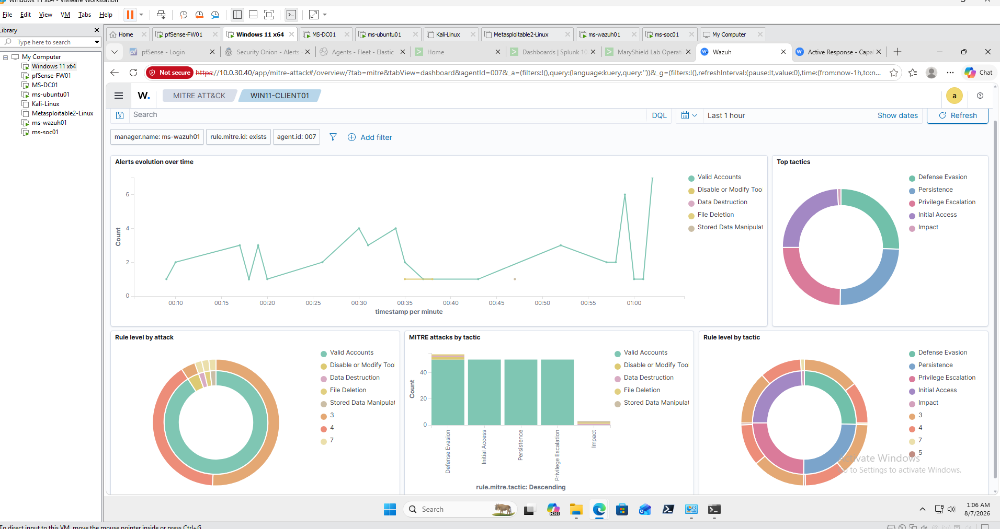
Integration with Splunk Enterprise
Wazuh and Splunk provide complementary security capabilities within the MaryShield Cyber Lab. Wazuh focuses on endpoint visibility, security configuration, file integrity, and alert generation, while Splunk provides centralized log analysis, dashboards, SPL searches, and event correlation.
Correlation Workflow
- Windows and Linux endpoints generate security telemetry.
- Wazuh agents forward endpoint events to the Wazuh Manager.
- Wazuh analyzes the data and generates security alerts.
- Related Windows and Sysmon events are forwarded to Splunk Enterprise.
- Analysts compare Wazuh alerts with Splunk searches and dashboards.
- Correlated evidence is used to investigate suspicious activity.
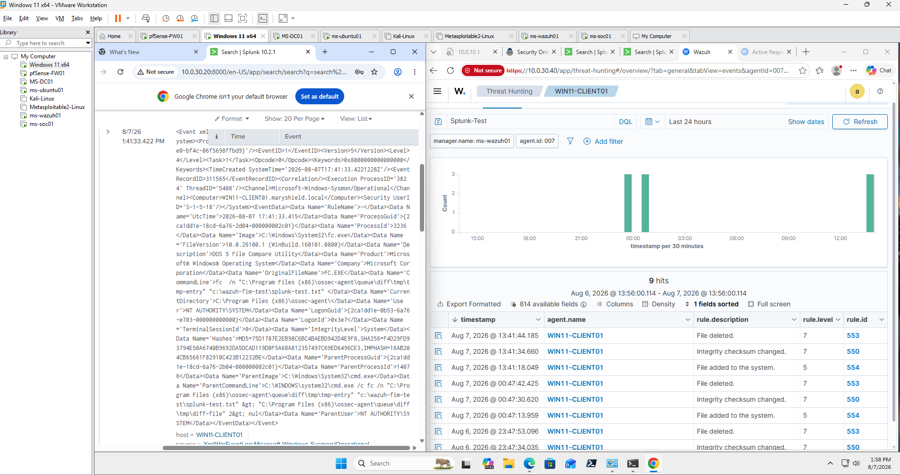
Integration with Security Onion
Wazuh provides host-based endpoint visibility while Security Onion provides network-based monitoring through Suricata, Zeek, Hunt, and packet capture.
Combined Investigation Workflow
- Wazuh identifies suspicious endpoint activity.
- Security Onion identifies related network traffic.
- Suricata provides IDS alerts.
- Zeek provides protocol metadata.
- PCAP provides packet-level evidence.
- Analysts correlate host and network events by timestamp, source, destination, user, and process.
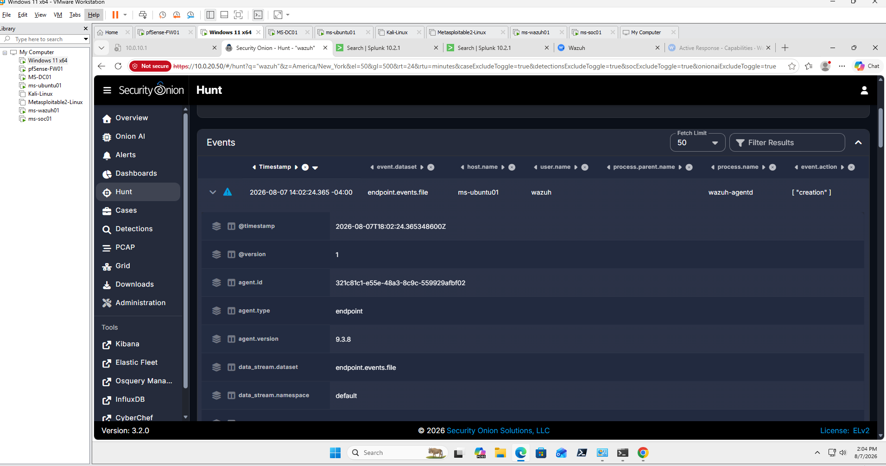